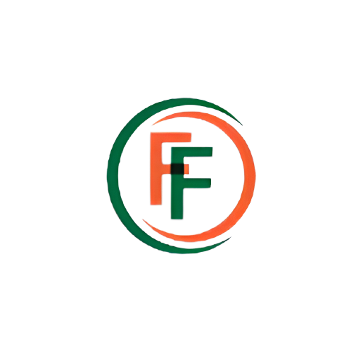

About Formfil
This site is specifically designed for cyber cafes to manage their
operations and provide services to their customers. Whether you're
running a small internet cafe or a large gaming center, this site
has everything you need to streamline your business and offer an
exceptional experience to your customers. With features such as
Online Form Filling, Samaj kalyan vibhag work like create adhar,PAN
card, voter ID card and many more services helps you efficiently
manage your cyber cafe, freeing up time and resources to focus on
growing your business.
So, if you're looking for a complete solution for your cyber cafe, this site is the right choice for you.
So, if you're looking for a complete solution for your cyber cafe, this site is the right choice for you.